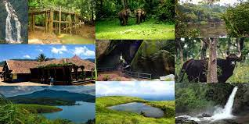

Wayanad (Wayanadu) is the green paradise full of plantations, wildlife, and forest and lies in the north-east of kerala.Wayanad Hills are contiguous to the protected area network of Mudumalai in Tamil Nadu on the south-east and Bandhipur in Karnataka on north-east, thus forming a vast land mass for the wild life to move about. Clean and pristine, enchanting and hypnotizing, this land is filled with history and culture. The vast stretches of mist - capped mountains, green meadows of valleys, white water springs, blue water lakes and wild forests express the splendid natural beauty of Wayanad. Loaded with charming waterfalls, caves, resorts, and homestays, Wayanad tourism is known for its zest ranches and natural life. The attractions in Wayand include Chenbra peak, kuruva Dweep,Pakshipathalam bird sanctuary,Pazhassi Raja Tomb, Soochipara falls, Muthanga wildlife Sanctuary. etc. Situated on the Southern tip of the Deccan plateau, here are few tourist places in Wayanad with pictures that are glorified by the Western Ghats with lofty ridges and clear lakes. After a glimpse at these tourist places in Wayanad with pictures, it would not be wrong to say that Wayanad is one of the most mesmerizing tourist destinations in Kerala. Situated on the Southern tip of the Deccan plateau, here are few tourist places in Wayanad with pictures that are glorified by the Western Ghats with lofty ridges and clear lakes. After a glimpse at these tourist places in Wayanad with pictures, it would not be wrong to say that Wayanad is one of the most mesmerizing tourist destinations in Kerala. Wayanad is the Green Paradise on earth tucked in a corner of gods own country. Wayanad is a great weekend getaway for people from south Karnataka. It has good air connectivity with Calicut being the nearest airport at 72kms. One of the biggest attraction in Wayanad is that every place of attraction has a trek with it. Nothing is on the roadside, everything is so secluded from the outside world. Wayanad is a district which has many wonders inside a radius of 50 kms, and the challenge is to choose the best places among them.


The Edakkal caves are two natural caves at a remote location at Edakkal, 25 km (15.5 mi) from Kalpetta in the Wayanad district of Kerala in India. They lie 1,200 m (3,900 ft) above sea level on Ambukutty Mala, near an ancient trade route connecting the high mountains of Mysore to the ports of the Malabar Coast. Inside the caves are pictorial writings believed to date to at least 6,000 BCE,[1][2] from the Neolithic man, indicating the presence of a prehistoric settlement in this region.[3] The Stone Age carvings of Edakkal are rare and are the only known examples from South India besides those of Shenthurini, Kollam, also in Kerala.[4] The cave paintings of Shenthurini (Shendurney) forests in Kerala are of the Mesolithic era (middle stone-age).